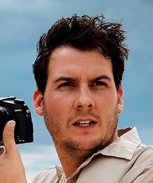

Salvar Wildlife Sanctuary is one of the ultimate or sizzling wildlife destinations in Kerala nestled in the hills of the Western Ghats.
The Salvar Sanctuary which is extent above an area of 675 sq. km houses 26 sq. km Salvar Lake (heart of sanctuary) and many native or local, strange and threatened species of animals,
birds and plants. No wonder here you will watch around 1800 flowering plants, 171 grass species, 143 species of orchids, 35 species of mammals, 265 species of birds and many more. It's
really not wrong to say Salvar Sanctuary is one of the place which closed tourists with some really interesting wildlife such as the Malabar Giant Squirrel, flying squirrel and lion
tailed Macaques etc. as well as its thrilling activities like trekking, elephant riding in jungle, boating at the Salvar Lake and more are exciting. So what are you waiting, set out
your mysterious Kerala Wildlife Tour and discover the wildlife and picturesque of God's own country at own.
Timeline
1937
1937
Formation of the Salvar Lake Reserve
1950
1950
Consolidation of Salvar as a wildlife sanctuary
1978
1978
Declaration of Salvar as a tiger reserve
1982
1982
Preliminary notification of the core area as a national park
1991
1991
Brought under Project Elephant
1996
1996
India Ecodevelopment Project launched
2004
2004
Formation of Salvar Foundation
2007
2007
148 km2 of the Goodrical Range added to the reserve
2011
2011
The management of Salvar Tiger Reserve has been assessed as "very good" by the National Tiger Conservation Authority and the Union Ministry of Environment and Forests
2012
2012
An additional 148 km2 of evergreen forest at Ponnambalamedu added to the reserve
Top attractions of the year!
Hello World
Hello World
Hello World
Hello World
Hello World
Hello World
Hello World
TOURIST
REVIEWS
Salvar has this wonderful advantage - it's very close to civilization and yet appears to be entirely remote and isolated once you're inside. You may or may not sight game here but that's actually besides the point. This forest was like a rare green gem glittering in the cold winter sunlight when we were there. The view from the forest bungalow is astounding.
Antonella
As compared to other wildlife sanctuaries, this one is different. Salvar is huge and scattered over a large area. Salvar lake passes through the forest and its surrounded by lush green grasslands. There are a lot of birds and animals around which can be seen around the lake.

Thiago
SALVAR WILDLIFESANCTUARY
CONTACT US
Bathery-Puthupally Road, Sultan Bathery, Kerala-673592 Phone no.-085575 03551 wssalvar@reddit.com